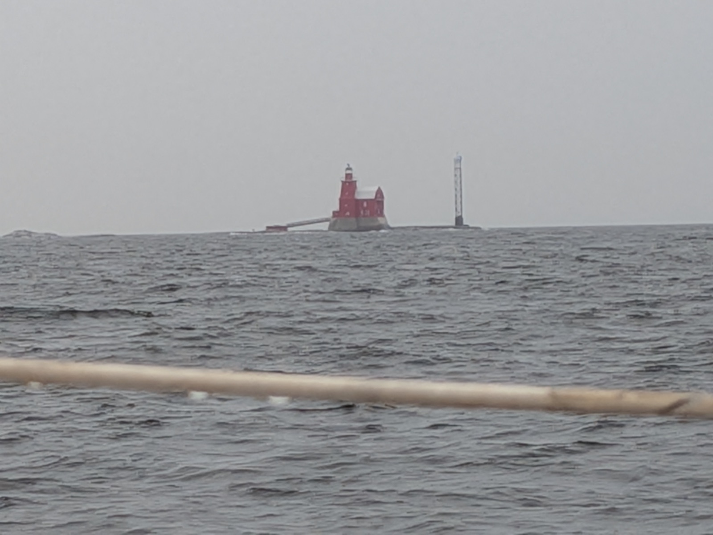
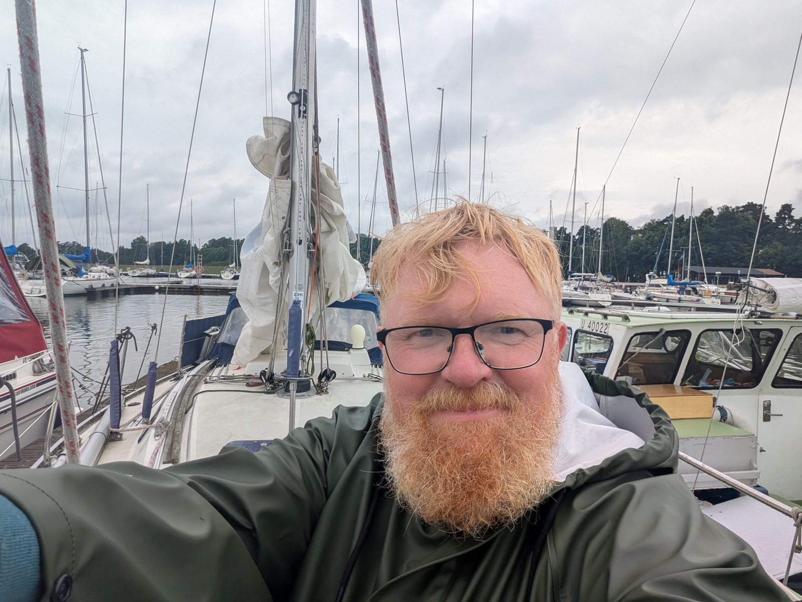

Home waters
The boat came home yesterday after fourteen months away. So did I, in a manner of speaking, since I have not sailed these waters in that time either. I have been home often enough, by ferry and by plane, but home is the land; the water I only get to with the boat, and the boat was elsewhere. The last leg was solo, seventy miles from Dirhami to Espoo in fourteen and a half hours, mostly under engine in light wind, with enough swell to keep the boat rolling.
Leaving Dirhami into the sunset, an hour out.
Calm enough, which meant the night's only real business was the shipping. The Gulf of Finland is not an empty place, one of the busier and more watched stretches of water in Europe. Something like forty thousand ships pass through it in a year, a good many of them tankers running Russian oil out past me, the shadow fleet you read about, old and uninsured and not always bothering to broadcast their position, and on top of that the ferries running west out of Helsinki and Tallinn towards Stockholm, which was the traffic in my way. The crossing takes you through the lanes, and you do not sleep much when there is traffic. I came through a gap in the flow and was lucky. By then the rain had started, drizzle turning steady through the dark hours, so I was wet and tired both. The only ship that asked anything of me was a Finnlines cargo vessel, the Finnmill, doing sixteen knots on a course that crossed mine at an awkward angle. I had seen her coming for hours on MarineTraffic before she appeared on the plotter, and then she went from a name on a screen to a real ship in what felt like no time. So I waited and let her pass. That was the only helm decision the night asked for.
There was one small mystery. A cruise ship, the Norwegian Sun, was looping about to the southwest of me in the darkness, wandering out toward Dirhami and then crawling back east, well off the sensible line. It took me a while to work out she was on the overnight from Helsinki to Tallinn, killing time in the gulf so as to arrive at a civilised hour. A cruise ship burning diesel to be late on purpose, in the dark.
Towards morning the wind came back and the last hours were good ones. I came in past Kallbåda, the iconic red brick lighthouse off Porkkala, and for me the marker of home water. From there I picked up the fairways into the archipelago. This is where it started to feel like something. I sail these waters often, know the outer islands. But arriving at them from the open sea, at the end of a long solo night, with the boat that had been gone for a year underneath me, put a strange light on things. I came down along the Espoo shore and could see, in the distance, the blocks where I live. Landmarks I pass without thought on foot, seen from the water at the end of a passage. I was tired and unreasonably happy.

Kallbåda, the marker of home water.
The last hours: the fairways into the archipelago.
There is a joke somewhere in the fact that Nolan's Odyssey came out a couple of weeks ago. It is hard to bring a boat home across a couple of seas without the word homecoming attaching itself to the day, uninvited and a little grand. The comparison does not survive contact. Odysseus took ten years; the boat took fourteen months, and I was home for most of them, arriving and leaving by ferry and by plane. He lost his ship and washed up alone; in my version it is the ship that arrives and I who kept turning up in between. No Cyclops. No sirens. No Calypso. Nobody turning the crew into pigs. I did have my own catalogue of grief, though it ran to a leaking stuffing box, water coming in with no bilge pump that would pump it, and an entire engine changed out after salt water had made havoc of its insides, rather than monsters. And I met people along the way who were far kinder than the plot required. A homecoming, then, with the epic sanded off. Which is the only kind most of us get, and just as well.
The arrival itself refused to be a scene. I had booked a sauna at the swimming beach, thinking to mark the occasion properly. By the time it came round I was too far gone. The water was not warm and the sauna was wasted on me; I was asleep on my feet. I did the minimum on the boat, deferred the rest to some braver day, closed her up and went home, where I spent the evening half asleep and half watching something I could not tell you the name of.
None of that matters much. The boat is home, and so am I.

Tired and unreasonably happy.